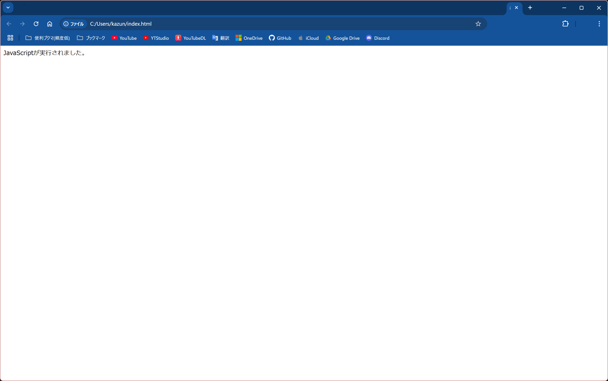
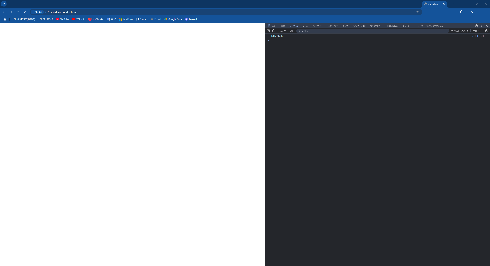

素人のJavaScript解説!
ジャンル: JavaScript 記事作成日: 2024/11/16 タグ: 初心者、JavaScript、初心者向け、解説この記事は現在執筆中により不完全な内容が記載されている恐れがあります。申し訳ありませんが、参考程度にお願いいたします。もし記事の内容が空っぽである場合、ほかのサイトへ回っていただくことをおすすめします。
本題
JavaScriptの書き方を解説します。JavaScriptの基礎や、持っておくべき知識を解説します。
筆者は企業に入ったことはありませんが、この際は気にせずご覧ください。お役に立てれば...。
JavaScriptの仕組み
JavaScriptは拡張子「js」ファイルにプログラムを記入し、ブラウザでHTMLファイルを経由してjsファイルにアクセスすることで実行できます。
まずは例です。HTMLは最小構成で書きます。
<!DOCTYPE html>
<html>
<head>
<meta charset="utf-8">
</head>
<body>
<script src="script.js"></script>
</body>
</html>次にJavaScriptです。bodyタグに文字を表示させます。
document.body.innerText = "JavaScriptが実行されました。";これをHTMLは「index.html」、JavaScriptは「script.js」で保存し、htmlファイルを開くと、こうなるはずです。

まず、JavaScriptの実行方法を理解していただけたかと思います。では先ほどのscript.jsの内容を次のコードに置き換えてみましょう。
console.log("Hello World!");このコードは初心者のコード練習でメジャーのコードです。実際に実行し、DevToolsを開いて、コンソールを見てみると、次が表示されるはずです。

コンソール文はプログラムの検証の時に役立つので、覚えておきましょう。ちなみに、DevToolsはChromeの場合Ctrlキー+Shiftキー+Iキーで開くことができます。
JavaScriptは何も書かれていない空のファイルに１行プログラムを書くだけで実行することができます。この前提を理解してから次へ行きましょう。
変数を知る
JavaScriptは変数を定義する、という行為を当たり前のように行います。それらを予め覚える必要があります。
// 固定変数(ほぼ書き換え不可)
const string1 = "固定変数";
// 可変変数(書き換え可)
let string2 = "可変変数";
let string2;
// 共通変数(個人的非推奨)
var string3 = "共通変数";
var string3;
// 関数(後述)
function func() {
console.log("Hello World!");
}
// クラス(後述)
class foo {
constructor() {}
}以上が基本的に宣言できる種類です。一つずつ紹介していきます。
constはabj
最後に
この記事ではJavaScriptの解説をしました。この記事が気に入ったらこのサイトをブックマークしていただくか、miharu.blogをブックマークしていただき、ほかの記事もぜひご覧ください。